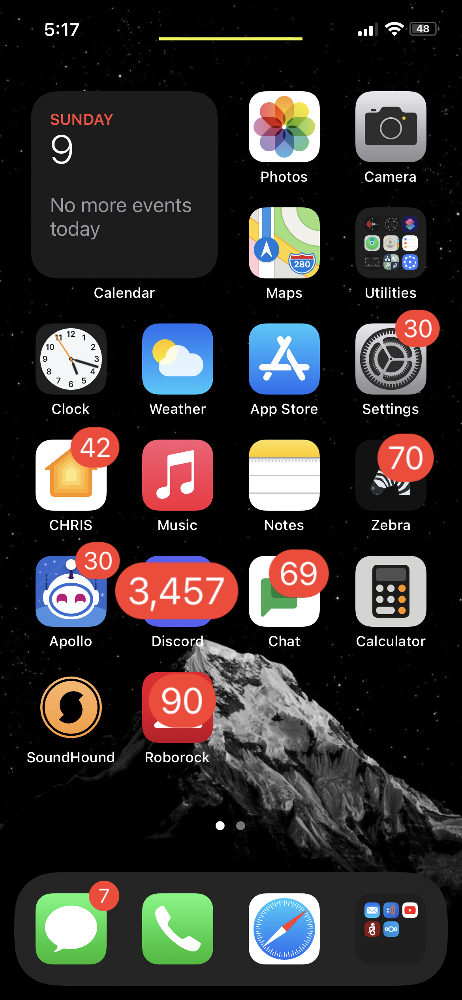
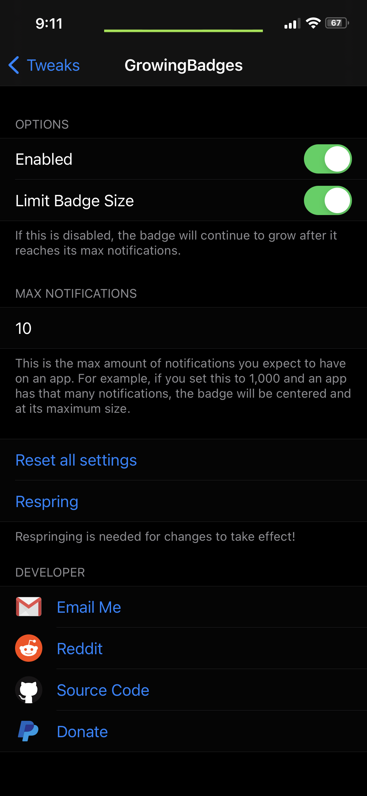

Compatibility
- Made for iOS 14
Description
- This tweak will scale your app notification badges based on how many notifications you have for that app.
screenshots

changelog
-
1.0.2
- Compiled prefs for armv7
-
1.0.1
- Compiled for armv7
-
1.0.0
- Initial Release